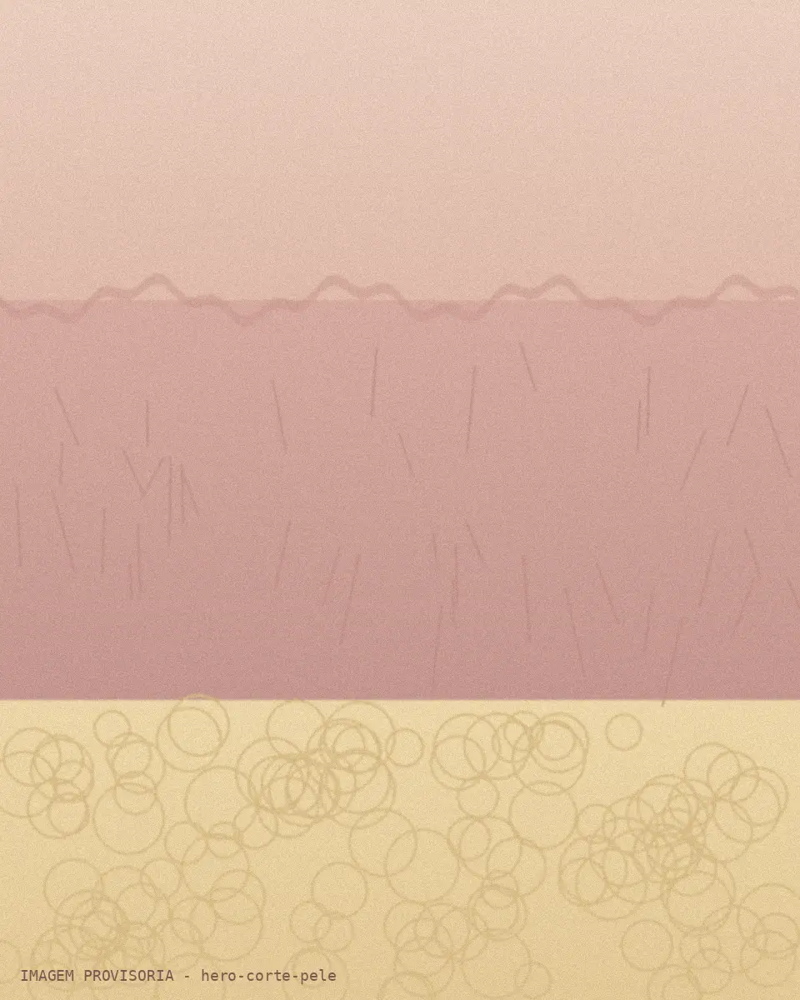
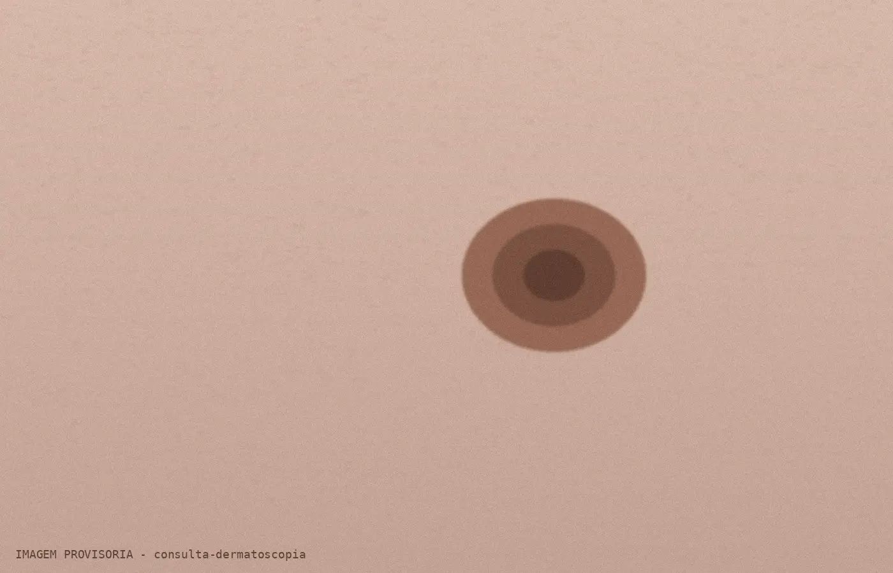

Dermatologia clínica e estética · São Paulo
A pele tem camadas. O cuidado também.
Antes de qualquer procedimento, examinamos a sua pele e localizamos onde está o problema. O tratamento vem depois, para a camada certa.

- Epiderme0,05–1,5 mm
- Derme0,3–3 mm
- Hipodermevaria por região
- Consulta com dermatoscopia exame das pintas e lesões com lente de aumento
- Plano por escrito o que tratar, em que ordem e por quanto tempo
- Procedimento só com indicação nada é vendido na primeira visita
01 · O que tratamos
Cada queixa mora numa profundidade.
Mancha, ruga e queda de cabelo nascem em lugares diferentes da pele. Saber onde é o que decide se a resposta é um ajuste na rotina, um ativo, um laser ou um procedimento.
-
Camada 1Epiderme0,05–1,5 mm
O que se vê primeiro
A camada que renova a pele a cada poucas semanas e recebe sol, poluição e cosméticos.
- Acne e oleosidade
- Manchas e melasma
- Exame de pintas
- Dermatites e descamação
-
Camada 2Derme0,3–3 mm
Onde fica a sustentação
Colágeno, elastina e vasos: é aqui que a pele perde firmeza e guarda as marcas.
- Rugas e flacidez
- Cicatrizes de acne
- Rosácea e vasinhos
- Queloides
-
Camada 3Hipoderme e anexosvaria por região
Raiz, unha e glândula
Folículos, glândulas e a gordura que sustenta tudo acima. Cabelo e unha também são pele.
- Queda de cabelo
- Doenças das unhas
- Suor excessivo
- Cistos e lipomas
02 · Primeira consulta
Antes do tratamento, o exame.

- 01
Conversa
Histórico, rotina de cuidados, medicamentos em uso e o que mais incomoda você.
- 02
Exame da pele inteira
Da cabeça aos pés, com dermatoscópio nas pintas e lesões que pedem um olhar de perto.
- 03
Plano por escrito
O que tratar, em que ordem e por quanto tempo. Você sai com o plano na mão.
- 04
Procedimento, se indicado
Muitas vezes a primeira resposta é ajustar a rotina. Procedimento só quando faz sentido.
Peça seu horário
Deixe nome e telefone. Retornamos para combinar o dia da avaliação.